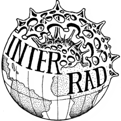
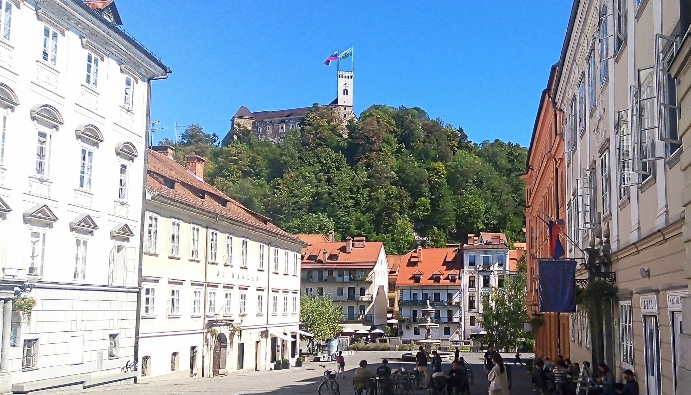
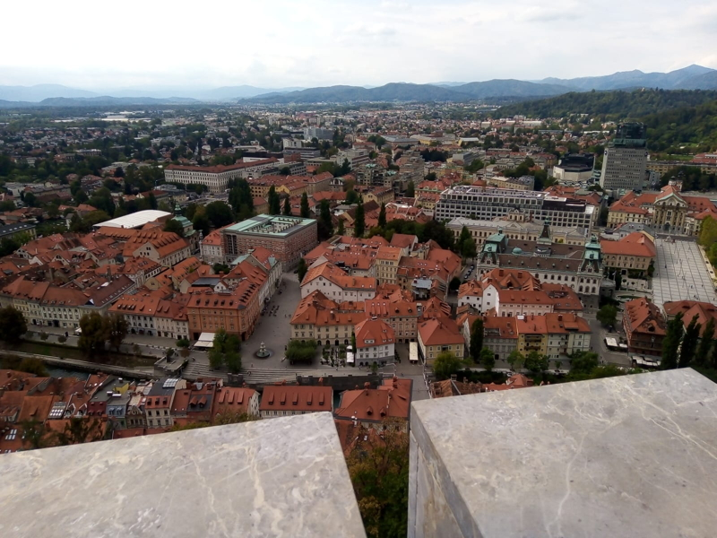

Last week, I went to my first in-person conference since 2019, which so happened to be one of my favourite conference to participate in: InterRad, the international conference on fossil and living Radiolaria.
This year (after being postponed for two years) the conference was in Ljubljana, Slovenia.
Because of a variety of circumstances (the war, COVID still being very much in our lives and the somewhat chaotic current state of european airports), the contingent of radiolarian scientists able to join was significantly smaller than usual (ca. 50 vs the usual ca. 100). Traditionally, the conference is split between a Paleozoic, a Mesozoic and a Cenozoic sessions plus a living Rads session if there are enough presentations submitted and one or two thematic sessions (one of them being often on regional geology). Interestingly the only session that did not shrink due to the low attendance was the Living Rad session, confirming a trend already seen in the previous InterRad in Niigata and Antalya, of an increase in interest in radiolarians amongst marine biologists and ecologists. This is a good thing as we are finally getting more and more informations on radiolarians as living organisms (including such essentials are their ecology, their feeding strategy or their modes of reproduction).
 {kind=link}
{kind=link}
Top: Ljubljana Castle viewed from the conference venue (SAZU).
Bottom: Conference Venue viewed from Ljubljana Castle. (Photos: mine)
Ljubljana itself was amazing. I got a day off in the middle of the conference while my colleagues were off to an excursion and was able to explore a bit that gorgeous city, climb the hill to the castle and overall enjoy all the cafes and restaurants I could find.
Addendum (2022-09-26): The talks from the conference were uploaded by the SAZU on Youtube.